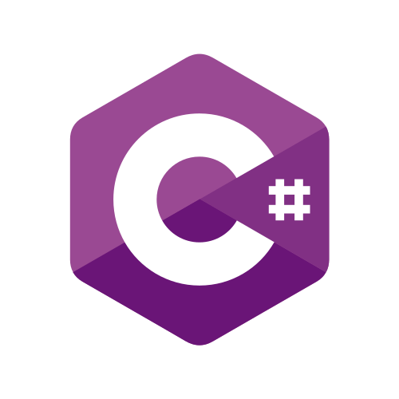

PROFESSIONAL LIFE
MY SKILLS IN SOFTWARE



⚠️
Disclaimer: Every single tool, language, or technology listed here is etched into my brain forever. Do I remember exactly how they all work? Of course... after a quick visit to Stack Overflow. Skills listed are based on real-life usage; memory recall subject to caffeine availability, moon phase, and internet speed.